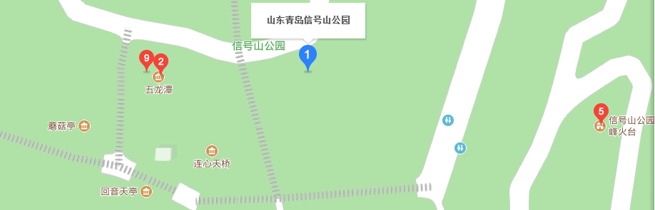

信号山公园
时间：2019/11/11

【简介】 | ||
|---|---|---|
|
信号山公园位于山东省青岛市市南区中部，海拔98米。德国侵占青岛后，为指挥进出胶州湾的船只，在山顶部建信号发布台1处，每天悬挂各类信号标志及气象、风力标志，命名为“华兹马克山”，市民称“挂旗山”或“旗台山”。 1923年胶澳商埠督办公署在整理青岛区划及地名时更正为“信号山”。山上遍植花草绿树。雾霭浮动之时，青翠欲滴。山坡上，造型优美的亭、台、楼、阁黄白分明，点缀其间；石阶小径，曲折回转，婉蜒于林荫之下。 更有山巅的3幢红色的蘑菇楼，宛如3柄火炬，屹立于满山青黛之中，十分夺目。这个以欧式风格规划建设的公园因山得名。 |
由来：信号山公园位于山东省青岛市市南区中部，海拔98米。德国侵占青岛后，为指挥进出胶州湾的船只，在山顶部建信号发布台1处，每天悬挂各类信号标志及气象、风力标志，命名为“华兹马克山”，市民称“挂旗山”或“旗台山”， 1923年胶澳商埠督办公署在整理青岛区划及地名时更正为“信号山”。 |
|
【景点介绍】
琅琊台：琅琊台为一耸立的山丘，海拔183.4米。三面环海，西北为一小片平原，是著名的国家重点风景名胜区。琅琊台“因山形如台，在琅琊，故曰琅琊台”。早在战国之前就已闻名于世，著名的《山海经》中就有关于琅邵台的记载：“琅琊台在渤海间，琅琊之东。” 地理位置：位于胶南市琅琊镇东南5公里处。门票：50元/人。交通：1、到景点的交通：从青岛市区乘汽车经胶州湾高速公路到胶南市汽车站，再从汽车站乘旅游专线车到琅琊台。
法海亭:法海亭它是青岛地区最古老的一处佛教寺院。因纪念创建该寺的第一代方丈法海大师而得名。自1995年不断维修，同年成立城阳区佛教文化艺术展览馆，专门负责法海寺的维修和管理工作。维修后的法海寺占地面积约12亩，分前后两院。 前院建大雄宝殿、东西配殿及佛教文化艺术展室，两侧及门前各有一颗距今约1500余年的高大银杏树。后院建三圣殿、东西配殿及相配套的服务设施。东跨院内有一株相传明万历年间寺内僧人栽的柿子树，寓意“万事如意”。前院东西两侧建立了展室，重点介绍了佛教从印度起源后， 在西汉之际传入中国，经历漫长的发展过程，逐渐为中国社会所认识、接受，并最终与中国文化相结合、协调发展，而成为中国传统文化的一个重要组成部分。法海寺始建于北魏时期。2001年1月正式对外开放。 地理位置：位于青岛市北部，城阳区夏庄街道源头村东侧 。 门票：5元/人。交通：1、到景点的交通：景点周围有公交车111、109、371路。
爱情角:青岛海滨有许多风景秀丽的海岬，爱情角是其中最美的一处。岬角分为陆域、海角两部分。陆域由西南——东北走向的湛山一路至五路，西北———东南走向的太平角一路至五路，纵横共10条街道组成。其中以各具特色的建筑著称，漫步其间，闲适飘逸，如人梦境。海角之东、南、西三面环海，海岸约2.5公里，曾建为“太平角公园”。 海岬之衔接处有楔形礁岩，形成一个个海滩，其中有在别处难得一见的蓝色礁岩。此角适宜鱼类栖息，故此地为垂钓之绝好去处。站立海礁之上游客会产生“天涯海角”之感觉． 爱情角礁石成群，宜于鱼类栖息，因而它既是“鱼乐园”，又是“垂钓者乐园”，每天有许多钓鱼爱好者在这里垂钓。 地理位置：位于市政府大楼南，香港中路与东海西路之间。门票：免费开放。交通：1、到景点的交通：6、26、31、206、223、304、311、312、、802路车武胜关路下车
【交通信息】
1路、214路、217路、220路空调、221路、225路环线、228路、231路环线、367路、隧道1路、隧道5路“青医附院”站下，沿江苏路向北步行60米遇五岔路口走最右手边的路，向东北步行60米后又遇三岔路口还是走右手边的路，向东南步行60米到龙山路，沿龙山路向东北步行80米遇岔路右手转弯再走60米到达。